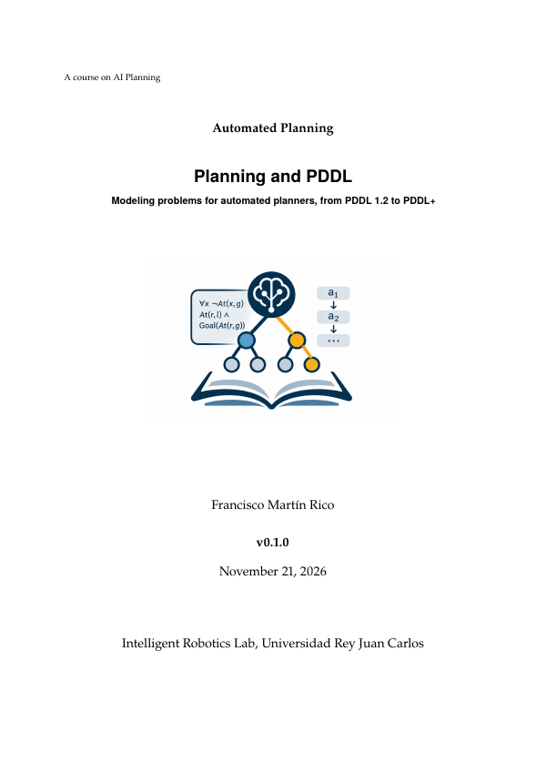

↓ Click the cover to download the PDF
Planning and PDDL
Modeling problems for automated planners, from PDDL 1.2 to PDDL+
A planner receives a description of a situation, of what can be done in it and of what is wanted, and answers with a sequence of actions that leads from one to the other. The description is written in PDDL, the Planning Domain Definition Language. This book teaches the whole language, from PDDL 1.2 to PDDL+, and above all how to model: how to go from a situation described in words to a PDDL model that a planner solves well, and how to choose among the alternatives. Every domain and problem in the book is a tested file, and every plan shown was produced and validated by a planner.
What is PDDL?
PDDL (Planning Domain Definition Language) is the standard language of automated planning. A PDDL model has two parts: a domain, with the types of objects, the predicates that describe a state and the actions with their preconditions and effects; and a problem, with the objects, the initial state and the goal. A planner reads both and returns a plan. PDDL was born in 1998 as the common language of the first International Planning Competition (IPC), and has grown since then with numbers, time, preferences and continuous change.
Every version of PDDL, from 1.2 to PDDL+
The book walks the whole language in the order it grew, from the simplest model that a planner can solve to hybrid systems.
| Version | Year | What it adds | Chapters |
|---|---|---|---|
| PDDL 1.2 | 1998 | Actions with preconditions and effects; types; negation, disjunction and quantifiers; conditional effects | 2–7 |
| PDDL 2.1 | 2002 | Numeric fluents; metrics of plan quality; durative actions; continuous change | 8–12 |
| PDDL 2.2 | 2004 | Derived predicates; timed initial literals | 13 |
| PDDL 3.0 | 2006 | Preferences (soft goals); constraints on the whole plan | 14–15 |
| PDDL 3.1 | 2008 | Object fluents; action costs | 9, 16 |
| PDDL+ | 2006 | Processes and events: a world that changes by itself | 17–18 |
The MODEL method
The book builds a modeling method chapter by chapter. Each new feature of the language adds questions to ask of a problem, ways to encode it and ways to get it wrong. Alternatives are compared with five criteria: fidelity, size, guidance, clarity and portability.
- MMap the situation
What is the problem, who acts, what counts as solved.
- OObjects and state
Which things exist and what the planner must know about them.
- DDynamics
What can be done or can happen, when, and what it changes.
- EExercise the model
Run it with a planner: trivial, typical, impossible and cheating problems.
- LLook again
Which other encoding would do, and which is better here.
Contents
Twenty chapters in seven parts, for a one-semester university course on AI planning. Every chapter ends with exercises; the solutions are in an appendix.
Part I — Planning and models
- 1. Planning: deciding before acting
- 2. A first model: STRIPS
- 3. What a planner does with your model
Part II — Classical planning: PDDL 1.2
- 4. Types, constants and equality
- 5. Richer conditions
- 6. Richer effects
- 7. Modeling classical problems: patterns and choices
Part III — Numbers: PDDL 2.1
- 8. Numeric fluents
- 9. Plan quality: metrics and action costs
Part IV — Time: PDDL 2.1 and 2.2
- 10. Durative actions
- 11. Coordination in time
- 12. Continuous change
- 13. Derived predicates and a world with a calendar
Part V — Preferences and constraints: PDDL 3
- 14. Soft goals and preferences
- 15. Constraints on the whole plan
- 16. Object fluents
Part VI — Hybrid systems: PDDL+
- 17. Processes and events
- 18. Modeling hybrid systems
Part VII — The method at work
- 19. The MODEL method, complete
- 20. Case study: a robot mission from story to execution
Appendices
- A. Kairos, the planner of the examples
- B. PDDL quick reference
- C. Solutions to the exercises
A PDDL example
The running example of the book: a courier robot on a hospital floor. This is the typed STRIPS domain of Chapter 4, a problem that asks for medicines in ward A, and the plan that the planner returns.
Domain: courier-domain.pddl
(define (domain courier)
(:requirements :strips :typing)
(:types robot location item)
(:predicates
(connected ?from ?to - location)
(robot-at ?r - robot ?l - location)
(item-at ?i - item ?l - location)
(carrying ?r - robot ?i - item)
(free ?r - robot))
(:action move
:parameters (?r - robot ?from ?to - location)
:precondition (and (robot-at ?r ?from) (connected ?from ?to))
:effect (and (not (robot-at ?r ?from))
(robot-at ?r ?to)))
(:action pick
:parameters (?r - robot ?i - item ?l - location)
:precondition (and (robot-at ?r ?l) (item-at ?i ?l) (free ?r))
:effect (and (not (item-at ?i ?l)) (not (free ?r))
(carrying ?r ?i)))
(:action drop
:parameters (?r - robot ?i - item ?l - location)
:precondition (and (robot-at ?r ?l) (carrying ?r ?i))
:effect (and (not (carrying ?r ?i))
(item-at ?i ?l) (free ?r))))Problem: courier-p01.pddl
(define (problem courier-p01)
(:domain courier)
(:objects
r1 - robot
lobby corridor pharmacy lab ward-a ward-b icu dock - location
meds1 - item)
(:init
(connected lobby corridor) (connected corridor lobby)
(connected lobby pharmacy) (connected pharmacy lobby)
(connected lobby dock) (connected dock lobby)
(connected corridor lab) (connected lab corridor)
(connected corridor ward-a) (connected ward-a corridor)
(connected corridor ward-b) (connected ward-b corridor)
(connected ward-b icu) (connected icu ward-b)
(robot-at r1 dock) (free r1)
(item-at meds1 pharmacy))
(:goal (item-at meds1 ward-a)))Plan
$ kairos courier-domain.pddl courier-p01.pddl
; cost = 7
(move r1 dock lobby)
(move r1 lobby pharmacy)
(pick r1 meds1 pharmacy)
(move r1 pharmacy lobby)
(move r1 lobby corridor)
(move r1 corridor ward-a)
(drop r1 meds1 ward-a)Download all the PDDL examples
Every domain, problem and plan of the book, more than 900 PDDL files, one folder per chapter, each with a test list and a script that runs them all with the planner. They are the same files in both editions.
↓ Download the PDDL examples (ZIP, 0.6 MB)
| Chapter | PDDL examples of | Files |
|---|---|---|
| 1 | Planning: deciding before acting | 6 |
| 2 | A first model: STRIPS | 49 |
| 3 | What a planner does with your model | 41 |
| 4 | Types, constants and equality | 46 |
| 5 | Richer conditions | 53 |
| 6 | Richer effects | 58 |
| 7 | Modeling classical problems: patterns and choices | 68 |
| 8 | Numeric fluents | 57 |
| 9 | Plan quality: metrics and action costs | 41 |
| 10 | Durative actions | 46 |
| 11 | Coordination in time | 34 |
| 12 | Continuous change | 46 |
| 13 | Derived predicates and a world with a calendar | 47 |
| 14 | Soft goals and preferences | 44 |
| 15 | Constraints on the whole plan | 48 |
| 16 | Object fluents | 32 |
| 17 | Processes and events | 41 |
| 18 | Modeling hybrid systems | 46 |
| 19 | The MODEL method, complete | 66 |
| 20 | Case study: a robot mission from story to execution | 52 |
Lecture slides
Seven two-hour lectures, one per part of the book, with figures and PDDL code. Click a slide to download its PDF.
The planner
The examples run with Kairos, an open-source planner that covers all the PDDL of the book: classical, numeric and temporal planning, preferences and constraints, and PDDL+. It also checks models and validates plans. Install it with pip install kairos-planner. The models are standard PDDL: the book says where other planners read a construct differently.
Frequently asked questions
What is PDDL?
PDDL, the Planning Domain Definition Language, is the standard language to describe planning problems: a domain with types, predicates and actions, and a problem with objects, an initial state and a goal. Planners read PDDL and return plans.
Which versions of PDDL does the book cover?
All of them: PDDL 1.2 (STRIPS, types, ADL), PDDL 2.1 (numeric fluents, metrics, durative actions), PDDL 2.2 (derived predicates, timed initial literals), PDDL 3.0 (preferences and trajectory constraints), PDDL 3.1 (object fluents, action costs) and PDDL+ (processes and events).
Is the book open?
Yes. The PDF of the book and the lecture slides can be downloaded from this page and shared under the CC BY-NC-ND 4.0 license.
Are there PDDL examples?
Yes, more than 900 PDDL files, in one ZIP that you can download from this page. Every domain and problem printed in the book is a tested file, and every plan shown was produced and validated by the Kairos planner. Every chapter has exercises with solutions.
Which planner do the examples use?
Kairos, an open-source planner that supports all of PDDL up to PDDL+. The models are standard PDDL and run with other planners where they support the features used.
Is there a Spanish version?
Yes, a faithful translation: Planificación y PDDL, with its slides, on the Spanish page of this site.
How to cite
If you use this book in your research or teaching, you can cite it as:
@book{martinrico2026pddl,
author = {Mart{\'{i}}n Rico, Francisco},
title = {Planning and {PDDL}: Modeling Problems for Automated
Planners, from {PDDL} 1.2 to {PDDL+}},
publisher = {Intelligent Robotics Lab, Universidad Rey Juan Carlos},
year = {2026},
note = {v0.1.0},
url = {https://fmrico.github.io/book_pddl_web/},
license = {CC BY-NC-ND 4.0}
}